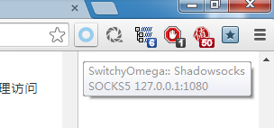

我的DigitalOcean邀请注册链接：[DigitalOcean注册](https://www.digitalocean.com/?refcode=69cda22205ee)
注册后账户可获得10$可使用资金，可以租用两个月的服务器
服务器端
服务器租用商：DigitalOcean
安装环境：CentOS 7 X64
安装Shadowsocks
yum install python-setuptools && easy_install pip
pip install shadowsocks
配置Shadowsocks
nano /etc/shadowsocks.json
然后输入
{
"server":"0.0.0.0",
"server_port":8388,
"local_address": "127.0.0.1",
"local_port":1080,
"password":"mypassword",
"timeout":300,
"method":"aes-256-cfb",
"fast_open": false,
"workers": 1
}
将上面的mypassword替换成你的密码，server_port也是可以修改的，例如3024，传说端口越小，效果越好，这个我没有去验证，但建议不要小于1024，以免引起不必要的麻烦，method是加密方式，如果想在路由器上运行的话可以改成rc4-md5这样路由器的负荷会小一些，同时加密的安全性也不错。
ctrl+o 保存 ctrl+x 退出
上方代码的解释：
| 字段名 | 含义 |
|---|---|
| server | 服务端监听的地址，服务端可填写0.0.0.0 |
| server_port | 服务端的端口 |
| local_address | 本地端监听的地址 |
| local_port | 本地端的端口 |
| password | 用于加密的密码 |
| timeout | 超时时间，单位秒 |
| method | 默认 "aes-256-cfb"，参见加密方法 |
| fast_open | 是否使用 TCP_FASTOPEN, true / false |
| workers | worker 数量，Unix/Linux 可用，如果不理解含义请不要改 |
加密方法参见： https://github.com/clowwindy/shadowsocks/wiki/Encryption
TCP_FASTOPEN参见： https://github.com/shadowsocks/shadowsocks/wiki/TCP-Fast-Open
测试&启动
ssserver -c /etc/shadowsocks.json
使用supervisor自动后台运行Shadowsocks
easy_install supervisor
然后创建配置文件,supervisord程序在运行后会自动查找并加载此目录配置文件。
echo_supervisord_conf > /etc/supervisord.conf
编辑配置文件supervisord.conf，
nano /etc/supervisord.conf
在后面添加
[program:shadowsocks]
command=ssserver -c /etc/shadowsocks.json
autostart=true
autorestart=true
user=nobody
完成后启动supervisord
supervisord -c /etc/supervisord.conf
设置supervisord开机启动
编辑文件：
nano /etc/rc.local
在末尾另起一行添加
supervisord
保存退出（和上文类似）
另centos7还需要为rc.local添加执行权限
chmod +x /etc/rc.local
至此运用supervisord控制shadowsocks开机自启和后台运行设置完成
shadowsocks服务器TCP优化
nano /etc/sysctl.conf
fs.file-max = 51200
#提高整个系统的文件限制
net.ipv4.tcp_syncookies = 1
#表示开启SYN Cookies。当出现SYN等待队列溢出时，启用cookies来处理，可防范少量SYN攻击，默认为0，表示关闭；
net.ipv4.tcp_tw_reuse = 1
#表示开启重用。允许将TIME-WAIT sockets重新用于新的TCP连接，默认为0，表示关闭；
net.ipv4.tcp_tw_recycle = 0
#表示开启TCP连接中TIME-WAIT sockets的快速回收，默认为0，表示关闭；
#为了对NAT设备更友好，建议设置为0。
net.ipv4.tcp_fin_timeout = 30
#修改系統默认的 TIMEOUT 时间。
net.ipv4.tcp_keepalive_time = 1200
#表示当keepalive起用的时候，TCP发送keepalive消息的频度。缺省是2小时，改为20分钟。
net.ipv4.ip_local_port_range = 10000 65000 #表示用于向外连接的端口范围。缺省情况下很小：32768到61000，改为10000到65000。（注意：这里不要将最低值设的太低，否则可能会占用掉正常的端口！）
net.ipv4.tcp_max_syn_backlog = 8192
#表示SYN队列的长度，默认为1024，加大队列长度为8192，可以容纳更多等待连接的网络连接数。
net.ipv4.tcp_max_tw_buckets = 5000
#表示系统同时保持TIME_WAIT的最大数量，如果超过这个数字，TIME_WAIT将立刻被清除并打印警告信息。
#额外的，对于内核版本新于**3.7.1**的，我们可以开启tcp_fastopen：
net.ipv4.tcp_fastopen = 3
# increase TCP max buffer size settable using setsockopt()
net.core.rmem_max = 67108864
net.core.wmem_max = 67108864
# increase Linux autotuning TCP buffer limit
net.ipv4.tcp_rmem = 4096 87380 67108864
net.ipv4.tcp_wmem = 4096 65536 67108864
# increase the length of the processor input queue
net.core.netdev_max_backlog = 250000
# recommended for hosts with jumbo frames enabled
net.ipv4.tcp_mtu_probing=1
保存并退出该文件,然后使用以下指令使配置生效：
sysctl -p
客户端
Shadowsocks GUI
服务端启动完成后需要配置本地端，
在此网页根据自己的系统下载最新的Shadowsocks GUI
http://sourceforge.net/projects/shadowsocksgui/files/dist/
相关说明参见此项目的GitHub
https://github.com/shadowsocks/shadowsocks-gui
win版以.xz结尾，可能需要新版Winrar才能解压
客户端配置对应服务端配置
Save后可创建快捷方式放到开始菜单启动项里即可开机自动运行
SwitchySharp（插件已经更新）
在Chrome浏览器中下载插件SwitchySharp并如图配置即可使用代理访问shadowsocks，其他浏览器类似
SwitchyOmega
在Chrome浏览器中下载插件SwitchyOmega（新版的SwitchySharp，个人感觉自动规则切换更加迅速）并如图配置即可使用代理访问shadowsocks，其他浏览器类似
设置完成后点击Chrome右上角SwitchyOmega标志，当为如图所示时即为使用代理上网

Disqus 留言
comments powered by Disqus